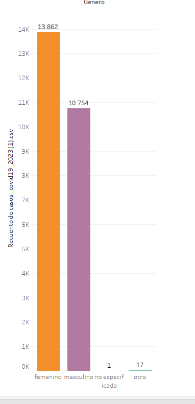
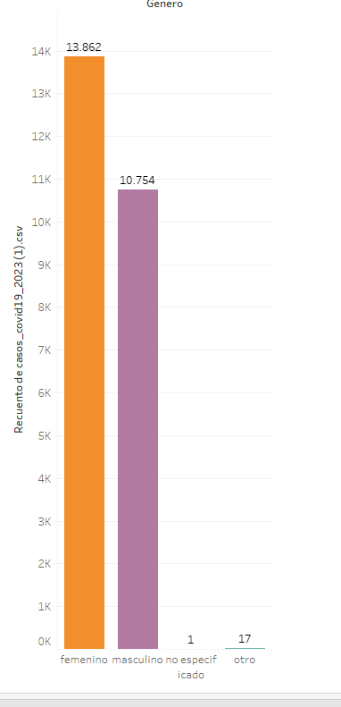
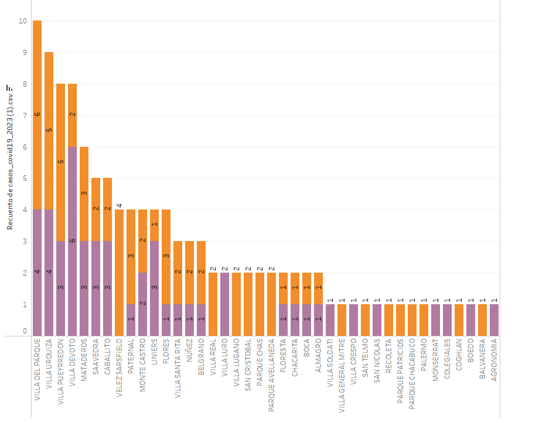
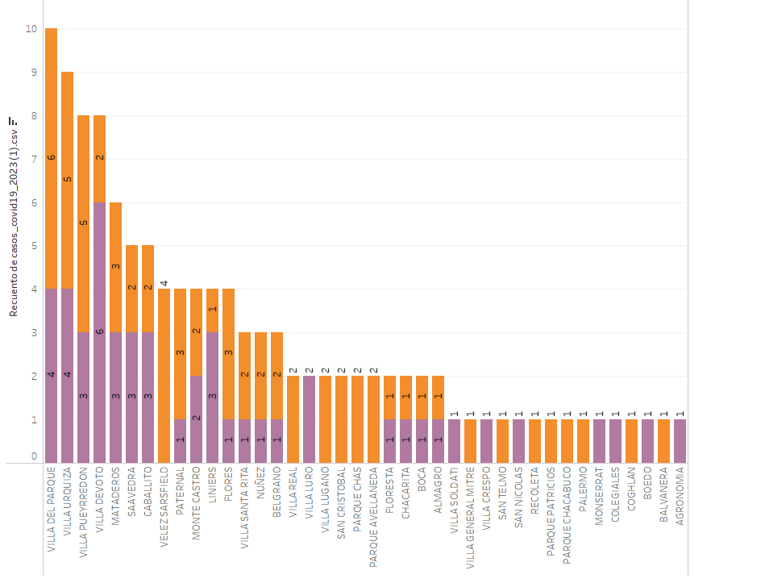

Este proyecto compara los datos más recientes de casos de COVID-19 en 2020 con los datos correspondientes en 2023, utilizando fuentes de datos abiertas. Al analizar las tendencias y patrones en los datos, buscamos obtener información sobre el impacto de la pandemia y la efectividad de las medidas tomadas para combatirla en los últimos años.
1. Infectados por barrio
Se puede apreciar como la cantidad de infectados por cada barrio baja considerablemente si comparamos los números de ambos años. Aunque el barrio de Palermo lidera el top de mayor cantidad de infectados tanto en 2020 como en 2023.

Fig. 1: < cant infectados: agronomía (2020) | < cant infectados: Villa Riachuelo (2023).
2. Casos por comuna
En 2020 la comuna más afectada por el virus era la 4, integrada por los barrios de La Boca, Barracas, Parque Patricios y Nueva pompeya. Para el año 2023 sería la comuna 8 la más afectada, compuesta por los barrios de Villa Soldati, Villa Lugano y Villa Riachuelo.
Fig. 2: < Cantidad infectados: comuna 4 (2020) y comuna 12 (2023) | < cantidad infectados: comuna 10 (2020) y comuna 8 (2023).
3. Casos COVID por género
En cuanto a género, podemos apreciar que al iniciar la pandemia en el año 2020, los hombres eran los más afectados por el virus. Esto se invierte en el año 2023.
 

Fig. 3: Datos de infectados según género.
4. Cantidad de muertes totales
Fig. 4: Cantidad de muertes totales según los registros(*).
5. Cantidad de muertes por barrio
Flores, Palermo y Balvanera son los barrios que registran la mayor cantidad de fallecidos por COVID en el año 2023. Mientras que en 2020, el podio es ocupado por los barrios de Villa del Parque, Villa Urquiza y Villa Pueyrredón.
 

Fig. 5: Datos de muertes por barrio.
6. Cantidad de muertes por barrio y género
En este gráfico se puede observar las muertes por género. Notando que el virus afectó más a los hombres de manera letal.
Fig. 6: Datos de muertes por barrio y género.